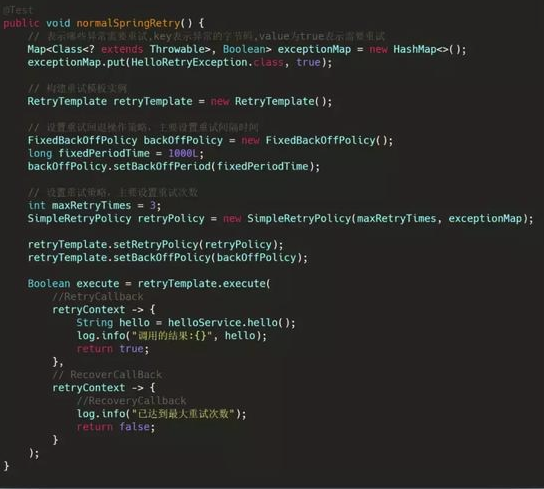
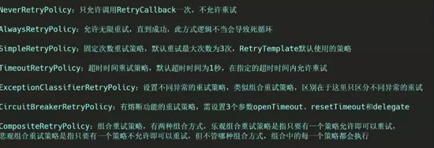

【最佳实践】程序员如何优雅的进行重试¶
1. 说明¶
最近公司在搞活动，需要依赖一个第三方接口，测试阶段并没有什么异常状况，但上线后发现依赖的接口有时候会因为内部错误而返回系统异常，虽然概率不大，但总因为这个而报警总是不好的，何况死信队列的消息还需要麻烦运维进行重新投递，所以加上重试机制势在必行。
重试机制可以保护系统减少因网络波动、依赖服务短暂性不可用带来的影响，让系统能更稳定的运行的一种保护机制。让你原本就稳如狗的系统更是稳上加稳。
为了方便说明，先假设我们想要进行重试的方法如下：
1 2 3 4 5 6 7 8 9 10 11 12 13 14 15 16 17 18 19 20 21 22 23 24 25 | import java.time.LocalTime; import java.util.concurrent.atomic.AtomicLong; import org.springframework.stereotype.Service; import lombok.extern.slf4j.Slf4j; @Service @Slf4j public class HelloService { private static AtomicLong helloTimes = new AtomicLong(); public String hello() throws Exception { long times = helloTimes.getAndIncrement(); if(times % 4 != 0) { log.warn("发生异常, time: {}", LocalTime.now()); throw new Exception("发生hello异常"); } return "hello"; } } |
2. 手动重试¶
先来用最硬核也是最简单的方法，直接在调用的时候进重试：
1 2 3 4 5 6 7 8 9 10 11 12 13 14 15 16 | public String getPrice(Integer lastPrice) throws Exception { int maxRetryTimes = 4; String s = ""; for (int i = 1; i <= maxRetryTimes; i++) { try { s = helloService.hello(); log.info("helloService返回:{}", s); return s; } catch (Exception e) { log.info("helloService.hello()调用失败，准备重试"); } } throw new Exception("重试次数耗尽"); } |
1 2 3 4 5 6 7 | 发生异常, time: 13:53:40.841 helloService.hello()调用失败，准备重试 发生异常, time: 13:53:40.841 helloService.hello()调用失败，准备重试 发生异常, time: 13:53:40.842 helloService.hello()调用失败，准备重试 helloService返回:hello |
这样虽然看起来可以解决问题，但实践上，由于没有重试间隔，很可能当时依赖的服务尚未从网络异常中恢复过来，所以极有可能接下来的几次调用都是失败的。
而且，这样需要对代码进行大量的侵入式修改，显然，不优雅。
3. 代理模式¶
上面的处理方式由于需要对业务代码进行大量修改，虽然实现了功能，但是对原有代码的侵入性太强，可维护性差。
所以需要使用一种更优雅一点的方式，不直接修改业务代码，那要怎么做呢？
其实很简单，直接在业务代码的外面再包一层就行了，代理模式在这里就有用武之地了。
1 2 3 4 5 6 7 8 9 10 11 12 13 14 15 16 17 18 19 20 21 22 23 24 25 26 27 28 29 30 31 32 33 34 | import org.springframework.beans.factory.annotation.Autowired; import org.springframework.stereotype.Service; import lombok.extern.slf4j.Slf4j; @Service @Slf4j public class HelloTetryProxyService { @Autowired private HelloService helloService; public String hello() throws Exception { int maxRetryTimes = 4; String s = ""; for (int retry = 1; retry <= maxRetryTimes; retry++) { try { s = helloService.hello(); log.info("helloService返回:{}", s); return s; } catch (Exception e) { log.info("helloService.hello()调用失败, 准备重试"); } } throw new Exception("重试次数耗尽"); } } |
1 2 3 4 5 6 7 8 9 10 11 12 13 14 15 16 17 18 19 20 21 22 23 24 25 | public String hello() throws Exception { int maxRetryTimes = 4; String s = ""; for (int retry = 1; retry <= maxRetryTimes; retry++) { try { s = helloService.hello(); log.info("helloService返回:{}", s); return s; } catch (Exception e) { log.info("helloService.hello()调用失败, 准备重试"); } try { Thread.sleep(1000); } catch (Exception e) { e.printStackTrace(); } } throw new Exception("重试次数耗尽"); } |
代理模式虽然要更加优雅，但是如果依赖的服务很多的时候，要为每个服务都创建一个代理类，显然过于麻烦，而且其实重试的逻辑都大同小异，无非就是重试的次数和延时不一样而已。如果每个类都写这么一长串类似的代码，显然，不优雅！
4. JDK动态代理¶
这时候，动态代理就闪亮登场了。只需要写一个代理处理类，就可以开局一条狗，砍到九十九。
1 2 3 4 5 6 7 | public interface IService { public String hello() throws Exception; } |
1 2 3 4 5 6 7 8 9 10 11 12 13 14 15 16 17 18 19 20 21 22 23 24 25 26 27 | import java.time.LocalTime; import java.util.concurrent.atomic.AtomicLong; import org.springframework.stereotype.Service; import lombok.extern.slf4j.Slf4j; @Service @Slf4j public class HelloService implements IService{ private static AtomicLong helloTimes = new AtomicLong(); @Override public String hello() throws Exception { long times = helloTimes.getAndIncrement(); if(times % 4 != 0) { log.warn("发生异常, time: {}", LocalTime.now()); throw new Exception("发生hello异常"); } return "hello"; } } |
1
2
3
4
5
6
7
8
9
10
11
12
13
14
15
16
17
18
19
20
21
22
23
24
25
26
27
28
29
30
31
32
33
34
35
36
37
38
39
40
41
42
43
44
45
46
47
48
49
50
51
52
import java.lang.reflect.InvocationHandler;
import java.lang.reflect.Method;
import java.lang.reflect.Proxy;
import java.time.LocalTime;
import lombok.extern.slf4j.Slf4j;
@Slf4j
public class RetryInvocationHandler implements InvocationHandler {
private final Object subject;
public RetryInvocationHandler(Object subject) {
this.subject = subject;
}
@Override
public Object invoke(Object proxy, Method method, Object[] args) throws Throwable {
int times = 0;
while (times <= 4) {
try {
return method.invoke(subject, args);
} catch (Exception e) {
times++;
log.info("times:{},time:{}", times, LocalTime.now());
if (times > 4) {
throw new Exception(e);
}
}
Thread.sleep(1000);//延时1s
}
return null;
}
/**
* 获取动态代理
* @param realSubject
* @return
*/
public static Object getProxy(Object realSubject) {
InvocationHandler handler = new RetryInvocationHandler(realSubject);
return Proxy.newProxyInstance(handler.getClass().getClassLoader(), realSubject.getClass().getInterfaces(), handler);
}
}
1 2 3 4 5 6 7 8 9 | @GetMapping("dd") public String getPrice(Integer lastPrice) throws Exception { HelloService helloService = new HelloService(); IService proxyService = (IService) RetryInvocationHandler.getProxy(helloService); String hello = proxyService.hello(); log.info("hello:{}", hello); return hello; } |
1 2 3 4 5 6 7 | 发生异常, time: 14:51:39.167 times:1,time:14:51:39.167 发生异常, time: 14:51:40.172 times:2,time:14:51:40.172 发生异常, time: 14:51:41.176 times:3,time:14:51:41.177 hello:hello |
在重试了4次之后输出了Hello，符合预期。
动态代理可以将重试逻辑都放到一块，显然比直接使用代理类要方便很多，也更加优雅。
不过不要高兴的太早，这里因为被代理的HelloService是一个简单的类，没有依赖其它类，所以直接创建是没有问题的，但如果被代理的类依赖了其它被Spring容器管理的类，则这种方式会抛出异常，因为没有把被依赖的实例注入到创建的代理实例中。
这种情况下，就比较复杂了，需要从Spring容器中获取已经装配好的，需要被代理的实例，然后为其创建代理类实例，并交给Spring容器来管理，这样就不用每次都重新创建新的代理类实例了。
话不多说，撸起袖子就是干。
5. cglib¶
6. Spring AOP¶
想要无侵入式的修改原有逻辑？想要一个注解就实现重试？用Spring AOP不就能完美实现吗？使用AOP来为目标调用设置切面，即可在目标方法调用前后添加一些额外的逻辑。
先创建一个注解：
1 2 3 4 5 6 7 8 9 10 11 12 13 14 15 | import java.lang.annotation.Documented; import java.lang.annotation.ElementType; import java.lang.annotation.Retention; import java.lang.annotation.RetentionPolicy; import java.lang.annotation.Target; @Target(ElementType.METHOD) @Retention(RetentionPolicy.RUNTIME) @Documented public @interface Retryable { int retryTimes() default 3; int retryInterval() default 1; } |
然后在需要重试的方法上加上注解：
1 2 3 4 5 6 7 8 9 10 11 12 13 14 15 16 17 18 19 20 21 22 23 24 25 26 27 28 29 | import java.time.LocalTime; import java.util.concurrent.atomic.AtomicLong; import org.springframework.stereotype.Service; import com.example.demo.anno.Retryable; import lombok.extern.slf4j.Slf4j; @Service @Slf4j public class HelloService { private static AtomicLong helloTimes = new AtomicLong(); @Retryable(retryTimes = 4, retryInterval = 2) public String hello() throws Exception { long times = helloTimes.getAndIncrement(); if(times % 4 != 0) { log.warn("发生异常, time: {}", LocalTime.now()); throw new Exception("发生hello异常"); } return "hello"; } } |
接着，进行最后一步，编写AOP切面
1 2 3 4 5 6 7 8 9 10 11 12 13 14 15 16 17 18 19 20 21 22 23 24 25 26 27 28 29 30 31 32 33 34 35 36 37 38 39 40 41 42 43 44 45 46 | import org.aspectj.lang.ProceedingJoinPoint; import org.aspectj.lang.annotation.Around; import org.aspectj.lang.annotation.Aspect; import org.aspectj.lang.annotation.Pointcut; import org.aspectj.lang.reflect.MethodSignature; import org.springframework.stereotype.Component; import com.example.demo.anno.Retryable; import lombok.extern.slf4j.Slf4j; @Component @Slf4j @Aspect public class RetryAspect { @Pointcut("@annotation(com.example.demo.anno.Retryable)") private void retryMethodCall() {} @Around("retryMethodCall()") public Object retry(ProceedingJoinPoint joinPoint) throws Exception { Retryable retryable = ((MethodSignature)joinPoint.getSignature()).getMethod().getAnnotation(Retryable.class); int retryInterval = retryable.retryInterval(); int maxRetryTimes = retryable.retryTimes(); Throwable error = new RuntimeException(); for(int retryTimes = 1; retryTimes <= maxRetryTimes; retryTimes++ ) { try { Object result = joinPoint.proceed(); return result; } catch (Throwable e) { error = e; log.warn("调用发生异常，开始重试。retryTimes:{}", retryTimes); } Thread.sleep(retryInterval * 1000); } throw new Exception("重试次数耗尽", error); } } |
开始测试：
1 2 3 4 5 6 7 8 9 10 11 | @Autowired private HelloService helloService; @GetMapping("dd") public String getPrice(Integer lastPrice) throws Exception { return helloService.hello(); } |
1 2 3 4 5 6 7 | Completed initialization in 7 ms 发生异常, time: 16:36:15.416 调用发生异常，开始重试。retryTimes:1 发生异常, time: 16:36:17.421 调用发生异常，开始重试。retryTimes:2 发生异常, time: 16:36:19.427 调用发生异常，开始重试。retryTimes:3 |
这样就相当优雅了，一个注解就能搞定重试，简直不要更棒。
7. Spring 的重试注解¶
实际上Spring中就有比较完善的重试机制，比上面的切面更加好用，还不需要自己动手重新造轮子。
那让我们先来看看这个轮子究竟好不好使。
先引入重试所需的jar包
1 2 3 4 5 6 7 8 | <dependency> <groupId>org.springframework.boot</groupId> <artifactId>spring-boot-starter-aop</artifactId> </dependency> <dependency> <groupId>org.springframework.retry</groupId> <artifactId>spring-retry</artifactId> </dependency> |
然后在启动类或者配置类上添加@EnableRetry注解，接下来在需要重试的方法上添加@Retryable注解（嗯？好像跟我自定义的注解一样？竟然抄袭我的注解
1 2 3 4 5 6 7 8 9 10 11 12 13 14 15 16 17 18 19 20 21 22 23 24 25 26 27 28 | import java.time.LocalTime; import java.util.concurrent.atomic.AtomicLong; import org.springframework.retry.annotation.Backoff; import org.springframework.retry.annotation.Retryable; import org.springframework.stereotype.Service; import lombok.extern.slf4j.Slf4j; @Service @Slf4j public class HelloService { private static AtomicLong helloTimes = new AtomicLong(); @Retryable(maxAttempts = 5, backoff = @Backoff(delay = 1000, multiplier = 2)) public String hello() throws Exception { long times = helloTimes.getAndIncrement(); if(times % 4 != 0) { log.warn("发生异常, time: {}", LocalTime.now()); throw new Exception("发生hello异常"); } return "hello"; } } |
默认情况下，会重试三次，重试间隔为1秒。当然我们也可以自定义重试次数和间隔。这样就跟我前面实现的功能是一毛一样的了。
但Spring里的重试机制还支持很多很有用的特性，比如说，可以指定只对特定类型的异常进行重试，这样如果抛出的是其它类型的异常则不会进行重试，就可以对重试进行更细粒度的控制。默认为空，会对所有异常都重试。
也可以使用include和exclude来指定包含或者排除哪些异常进行重试。
可以用maxAttemps指定最大重试次数，默认为3次。
可以用interceptor设置重试拦截器的bean名称。
可以通过label设置该重试的唯一标志，用于统计输出。
可以使用exceptionExpression来添加异常表达式，在抛出异常后执行，以判断后续是否进行重试。
此外，Spring中的重试机制还支持使用backoff来设置重试补偿机制，可以设置重试间隔，并且支持设置重试延迟倍数。
举个例子：
该方法调用将会在抛出HelloRetryException异常后进行重试，最大重试次数为5，第一次重试间隔为1s，之后以2倍大小进行递增，第二次重试间隔为2s，第三次为4s，第四次为8s。
重试机制还支持使用@Recover 注解来进行善后工作，当重试达到指定次数之后，将会调用该方法，可以在该方法中进行日志记录等操作。
这里值得注意的是，想要@Recover 注解生效的话，需要跟被@Retryable 标记的方法在同一个类中，且被@Retryable 标记的方法不能有返回值，否则不会生效。
并且如果使用了@Recover注解的话，重试次数达到最大次数后，如果在@Recover标记的方法中无异常抛出，是不会抛出原异常的
除了使用注解外，Spring Retry 也支持直接在调用时使用代码进行重试：

此时唯一的好处是可以设置多种重试策略：

可以看出，Spring中的重试机制还是相当完善的，比上面自己写的AOP切面功能更加强大。
这里还需要再提醒的一点是，由于Spring Retry用到了Aspect增强，所以就会有使用Aspect不可避免的坑——方法内部调用，如果被 @Retryable 注解的方法的调用方和被调用方处于同一个类中，那么重试将会失效。
但也还是存在一定的不足，Spring的重试机制只支持对异常进行捕获，而无法对返回值进行校验。
可以看出，Spring中的重试机制还是相当完善的，比上面自己写的AOP切面功能更加强大。
这里还需要再提醒的一点是，由于Spring Retry用到了Aspect增强，所以就会有使用Aspect不可避免的坑——方法内部调用，如果被 @Retryable 注解的方法的调用方和被调用方处于同一个类中，那么重试将会失效。
但也还是存在一定的不足，Spring的重试机制只支持对异常进行捕获，而无法对返回值进行校验。
8. Guava Retry¶
最后，再介绍另一个重试利器——Guava Retry。
相比Spring Retry，Guava Retry具有更强的灵活性，可以根据返回值校验来判断是否需要进行重试。
先来看一个小栗子：
先引入jar包：
1 2 3 4 5 | <dependency> <groupId>com.github.rholder</groupId> <artifactId>guava-retrying</artifactId> <version>2.0.0</version> </dependency> |
1 2 3 4 5 6 7 8 9 | Retryer<String> retryer = RetryerBuilder.<String>newBuilder() .retryIfExceptionOfType(Exception.class) .retryIfResult(StringUtils::isEmpty) .withWaitStrategy(WaitStrategies.fixedWait(3, TimeUnit.SECONDS)) .withStopStrategy(StopStrategies.stopAfterAttempt(3)) .build(); return retryer.call(()->helloService.hello()); |
先创建一个Retryer实例，然后使用这个实例对需要重试的方法进行调用，可以通过很多方法来设置重试机制，比如使用retryIfException来对所有异常进行重试，使用retryIfExceptionOfType方法来设置对指定异常进行重试，使用retryIfResult来对不符合预期的返回结果进行重试，使用retryIfRuntimeException方法来对所有RuntimeException进行重试。
还有五个以with开头的方法，用来对重试策略/等待策略/阻塞策略/单次任务执行时间限制/自定义监听器进行设置，以实现更加强大的异常处理。
通过跟Spring AOP的结合，可以实现比Spring Retry更加强大的重试功能。
仔细对比之下，Guava Retry可以提供的特性有：
可以设置任务单次执行的时间限制，如果超时则抛出异常。 可以设置重试监听器，用来执行额外的处理工作。 可以设置任务阻塞策略，即可以设置当前重试完成，下次重试开始前的这段时间做什么事情。 可以通过停止重试策略和等待策略结合使用来设置更加灵活的策略，比如指数等待时长并最多10次调用，随机等待时长并永不停止等等。
9. 总结¶
本文由浅入深的对多种重试的姿势进行了360度无死角教学，从最简单的手动重试，到使用静态代理，再到JDK动态代理和CGLib动态代理，再到Spring AOP，都是手工造轮子的过程，最后介绍了两种目前比较好用的轮子，一个是Spring Retry，使用起来简单粗暴，与Spring框架天生搭配，一个注解搞定所有事情，另一个便是Guava Retry，不依赖于Spring框架，自成体系，使用起来更加灵活强大。
个人认为，大部分场景下，Spring Retry提供的重试机制已经足够强大，如果不需要Guava Retry提供的额外灵活性，使用Spring Retry就很棒了。当然，具体情况具体分析，但没有必要的情况下，不鼓励重复造轮子，先把别人的轮子研究清楚再想想还用不用自己动手。
本文到此就告一段落了，又用了一天的时间完成了完成了一篇文章，写作的目的在于总结和分享，我相信最佳实践是可以总结和积累下来的，在大多数场景下都是适用的，这些最佳实践会在逐渐的积累过程中，成为比经验更为重要的东西。因为经验不总结就会忘记，而总结出来的内容却不会被丢失。